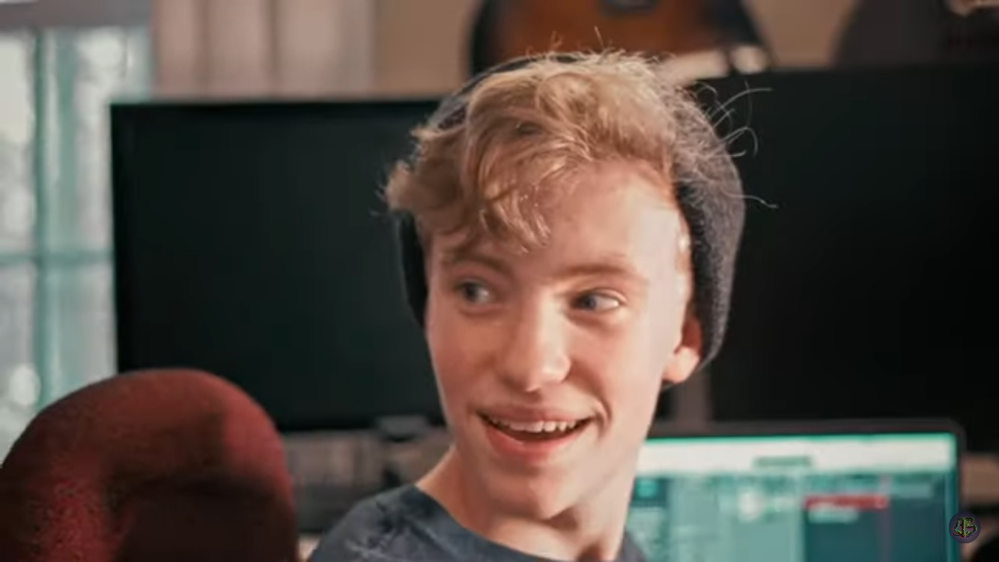

Jesse Whiting - Resume

Summary
Art-enthusiast with a deep passion for literature, filmmaking, score composition and music production.
Demonstrates an
ability to bridge cultural gaps and communicate effectively in multiple languages and a passion for learning
more.
Possesses a strong aesthetic sense and a keen eye for detail, reflected in captivating short films, music
compositions,
and fictional writing works. These passions and practical experiences along with a strong academic background
and
eight years of martial arts study represents a unique and multifaceted skill set.
Education
High School Diploma (active)
Powhatan High School | Powhatan, VA
Graduation - 05/2025
- GPA: 4.22
- Student Ambassador for the Advanced College Academy hosted by Reynolds Community College
- Active member of National Honors Society, Math Honors Society, English Honors Society, and Computer
Science Honors Society
Social Science - Associates (active)
Reynolds Community College | Richmond, VA
Graduation - 05/2025
- Dual Enrollment hosting location
Work Experience
Sound Designer/Foley Artist
Freelance - Self Employed
12/2023 - Present
- Designed and creates original sound effects, atmospheres, and ambience to enhance the storytelling and
emotional impact of a project
- Implemented sound designs and mixed audio elements using professional software and hardware,
ensuring optimal balance, clarity, and spatialization.
- Projects to-date:
Pet/House Sitter
11/2023 - Present
Five Regular clients - house cleaning, plant maintenance, dog care, etc.
Gigging Musician
01/2021 - Present
- Piano, Guitar, Bass, Violin
- Performed pieces for a show choir for two years
- Actively play almost every week for a rock church band
- Band Consistently play for funerals, weddings, etc.
Counselor/Certified Assistant MMA Instructor
Warriors Way Martial Arts Institute | Powhatan, VA
05/2021 - 08/2022
- Supervised up to 100 students to share unique experiences and skills
- Taught the Martial Art of Senshi-Do
Film Studio Co-Founder
DatumSpeed Studios
- Co-founder of a film crew
- Writer, director, cinematographer, editor, and producer
- Award-winning independent filmmaker and musician
- Produces horror short films and how-to tutorials
Assistant Cameraman/Editor
Buried Hatchet Productions - Raleigh, NC
"Worth The Weight | Short Horror Film"
Released May 13, 2023
- Captured footage of actors, crew members, and practical effects/makeup during rehearsals, filming, and
various behind the scenes activities
- Collaborated with the film crew to ensure smooth execution
- Assisted in equipment setup, takedown, and maintenance
- Collaborated with the producers in the editing stage to process the film and behind-the-scenes footage
Assistant Cameraman
JB Media - Chesterfield, VA
Summer 2022
- Assisted in setting up and breaking down various equipment (gimbals, cameras, rigs, etc.)
- Operated secondary cameras to capture important, visually appealing moments during events
Languages
English (C2, native), Spanish (B2), ASL (Intermediate), Japanese (N5), Italian (A2)
Technical Proficiencies
- Word Processing (Google Docs, Microsoft Word), spreadsheets (Microsoft Excel, Google Sheets)
- Video Editing (Adobe Premiere Pro, Adobe After Effects, DaVinci Resolve)
- Audio and music software (Adobe Audition, Ableton Live 10, Logic Pro X)